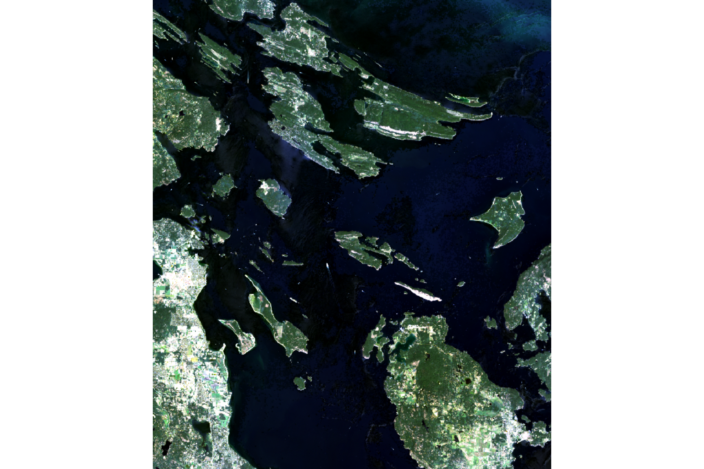
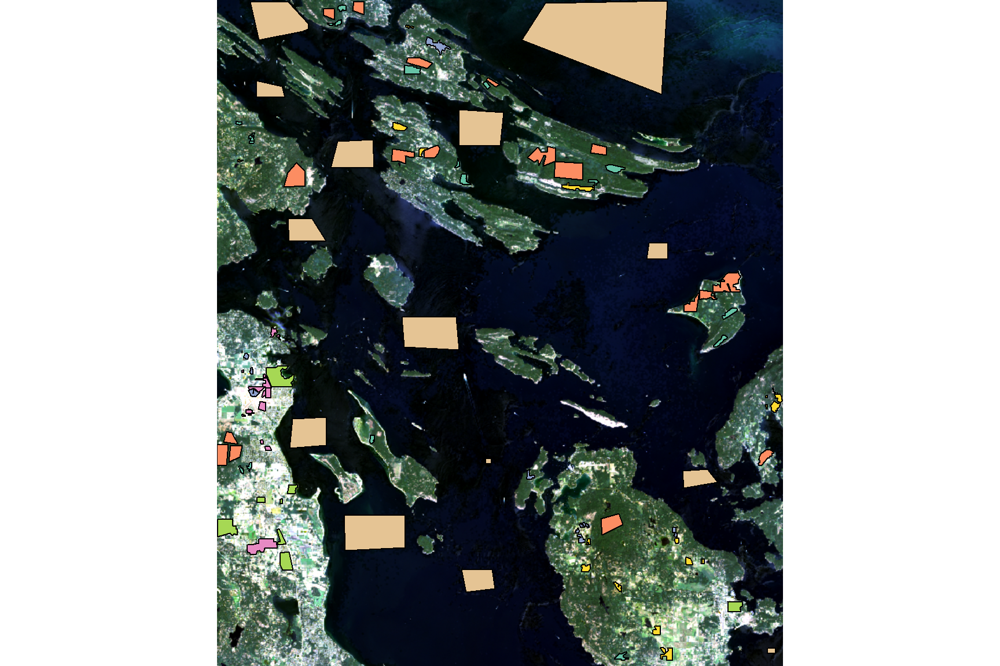
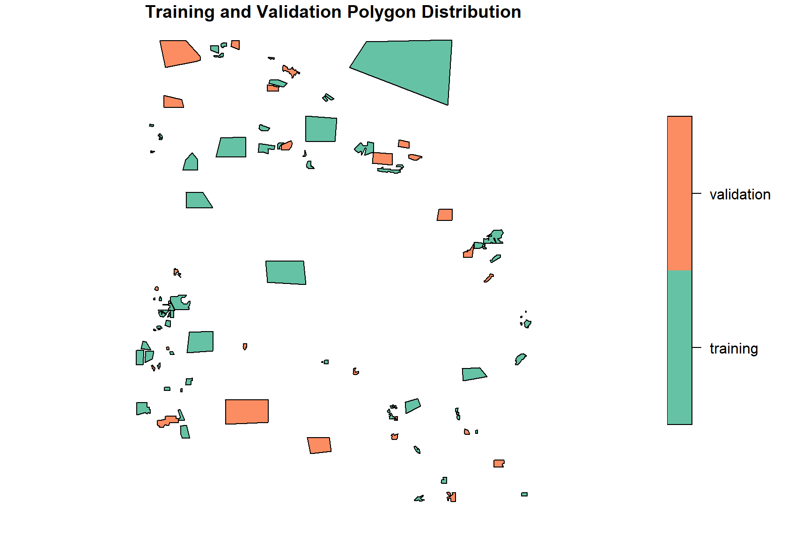
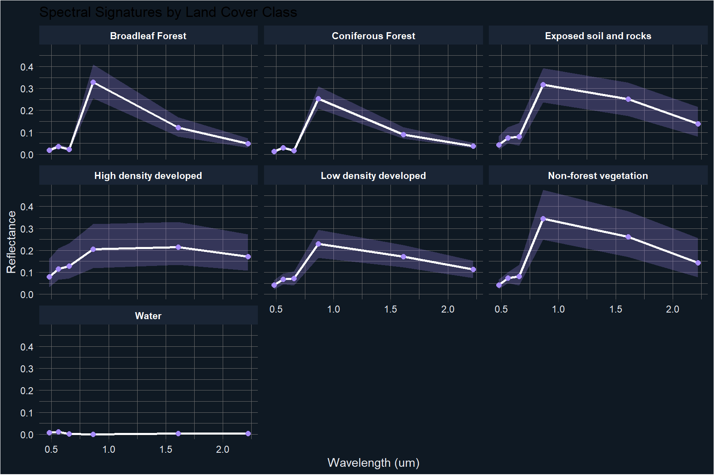
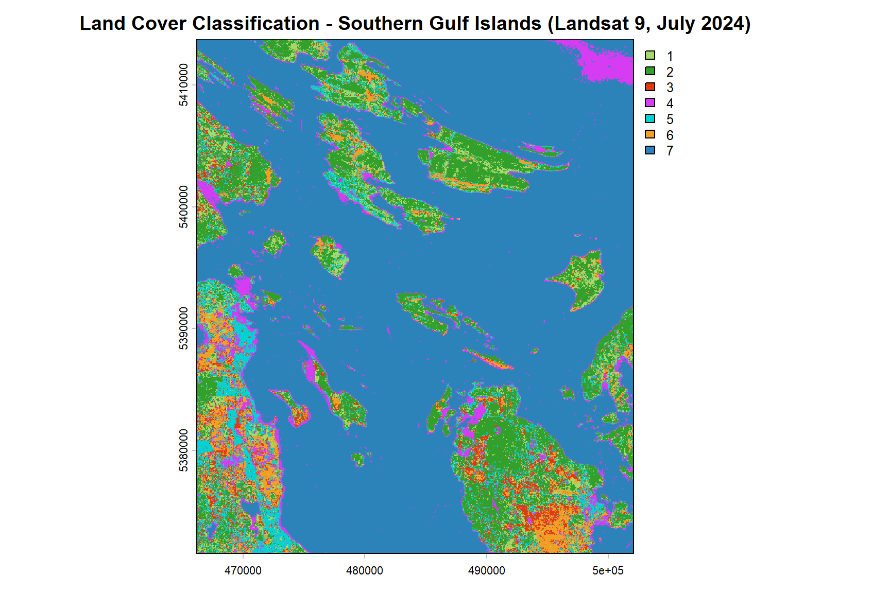

Land Cover Classification of the Southern Gulf Islands
Supervised Maximum Likelihood Classification Using Landsat 9 Imagery
Project Overview
Land cover mapping is one of the most widely used applications of remote sensing in environmental management, forestry, and urban planning. Knowing what covers the land, whether forest, water, developed areas, or bare soil, is fundamental to monitoring ecosystem health, tracking land use change, and supporting evidence-based planning decisions.
This project applies supervised Maximum Likelihood Classification (MLC) to a Landsat 9 multispectral image of the Southern Gulf Islands, British Columbia, acquired on July 16, 2024. The goal is to classify the landscape into seven land cover categories using manually delineated training polygons and to assess the accuracy of the resulting map using a held-out validation dataset.
The Southern Gulf Islands represent a ecologically sensitive and increasingly pressured landscape, making accurate and up-to-date land cover information particularly valuable for conservation planning and ecosystem monitoring in the region.
Data Sources
| Dataset | Description | Source |
|---|---|---|
| Landsat 9 OLI Level-2 Surface Reflectance | 6-band multispectral image, July 16, 2024 | USGS Earth Explorer |
| Classification Polygons | Manually delineated training and validation areas in QGIS | Field interpretation |
Landsat 9 Bands Used:
| Band | Name | Wavelength (um) | Resolution |
|---|---|---|---|
| Band 2 | Blue | 0.45-0.51 | 30 m |
| Band 3 | Green | 0.53-0.59 | 30 m |
| Band 4 | Red | 0.64-0.67 | 30 m |
| Band 5 | Near Infrared (NIR) | 0.85-0.88 | 30 m |
| Band 6 | SWIR 1 | 1.57-1.65 | 30 m |
| Band 7 | SWIR 2 | 2.11-2.29 | 30 m |
Land Cover Classes:
| Class | Description |
|---|---|
| Broadleaf Forest | Deciduous trees with broad leaves |
| Coniferous Forest | Evergreen needle-leaved trees |
| Exposed Soil and Rocks | Bare ground, rocky outcrops |
| High Density Developed | Urban core, dense infrastructure |
| Low Density Developed | Suburban areas, sparse development |
| Non-forest Vegetation | Grassland, shrubs, agricultural fields |
| Water | Ocean, lakes, rivers |
Packages
#library(RStoolbox)
library(terra)
library(sf)
library(tidyverse)Study Area and Imagery
The Landsat 9 scene covers the Southern Gulf Islands of British Columbia, a complex landscape of forested islands, coastal waters, and scattered rural and residential development. The image was acquired during peak summer conditions, which provides good spectral separability between land cover types due to full leaf-out in broadleaf forests and minimal cloud cover.
# Loading the Landsat 9 surface reflectance image
ls_image <- rast(landsat_path)
# Displaying image properties
ls_imageclass : SpatRaster
size : 1407, 1194, 6 (nrow, ncol, nlyr)
resolution : 30, 30 (x, y)
extent : 466215, 502035, 5371545, 5413755 (xmin, xmax, ymin, ymax)
coord. ref. : WGS 84 / UTM zone 10N
source : LC09_L2SP_047026_20240716_20240717_02_T1_SR_BSTACK.tif
names : blue, green, red, nir, swir1, swir2
min values : 0, 0, 0, 0, 0, 0
max values : 1, 1, 1, 1, 1, 1 # True color composite (Red = Band 3, Green = Band 2, Blue = Band 1)
terra::plotRGB(ls_image, r = 3, g = 2, b = 1, stretch = "lin",
main = "True Color Composite - Southern Gulf Islands (July 16, 2024)")
Training and Validation Data
Supervised classification requires manually identified sample areas that represent each land cover class in the image. These training polygons were delineated in QGIS by visually interpreting the Landsat imagery and cross-referencing with Google Satellite imagery to confirm land cover identity.
A total of 104 polygons were delineated across seven land cover classes. To ensure an unbiased accuracy assessment, 70% of the polygons in each class were used for training and the remaining 30% were reserved for independent validation.
# Loading the classification polygons
class_poly <- st_read(polygons_path, quiet = TRUE)
# Ensuring geometry validity
class_poly <- st_make_valid(class_poly)
# Converting land cover class to ordered factor
class_poly <- class_poly %>%
mutate(lc_class = factor(lc_class,
levels = c("Broadleaf Forest",
"Coniferous Forest",
"Exposed soil and rocks",
"High density developed",
"Low density developed",
"Non-forest vegetation",
"Water")))
# Visualizing polygons on the image
terra::plotRGB(ls_image, r = 3, g = 2, b = 1, stretch = "lin")
plot(class_poly[, "lc_class"], add = TRUE, key.width = lcm(5))
Polygon Summary by Class
# Summarizing polygon counts per land cover class
poly_summary <- class_poly %>%
st_drop_geometry() %>%
group_by(lc_class) %>%
summarize(n_poly = n())
knitr::kable(poly_summary,
col.names = c("Land Cover Class", "Number of Polygons"),
caption = "Number of delineated polygons per land cover class")| Land Cover Class | Number of Polygons |
|---|---|
| Broadleaf Forest | 18 |
| Coniferous Forest | 18 |
| Exposed soil and rocks | 12 |
| High density developed | 16 |
| Low density developed | 8 |
| Non-forest vegetation | 17 |
| Water | 15 |
Training and Validation Split
# Removing any existing ID column and reassigning clean IDs
class_poly <- class_poly %>%
select(-any_of("ID")) %>%
tibble::rowid_to_column(var = "ID")
set.seed(1234)
# Sampling 70% of polygons per class for training
poly_train <- class_poly %>%
group_by(lc_class) %>%
sample_frac(0.7) %>%
mutate(set = "training") %>%
st_cast(to = "POLYGON")
# Using remaining 30% for validation
poly_val <- class_poly %>%
filter(!ID %in% poly_train$ID) %>%
mutate(set = "validation") %>%
st_cast(to = "POLYGON")
poly_set <- rbind(poly_train, poly_val)
# Plotting training vs validation split
plot(poly_set[, "set"], key.width = lcm(4),
main = "Training and Validation Polygon Distribution")
Spectral Signatures
Before running the classification, it is useful to examine the spectral signatures of each land cover class. A spectral signature describes how a class reflects energy across different wavelengths. Classes with distinct signatures are easier for the algorithm to separate; classes with overlapping signatures are more likely to be confused.
# Adding a unique join ID and extracting pixel values from all polygons
poly_set <- poly_set %>%
tibble::rowid_to_column(var = "join_id") %>%
select(-ID)
poly_set_vals <- terra::extract(ls_image, vect(poly_set))
poly_set_vals <- inner_join(poly_set, poly_set_vals,
join_by(join_id == ID)) %>%
st_drop_geometry()
# Pivoting to long format for spectral analysis
poly_set_vals_long <- pivot_longer(poly_set_vals,
blue:swir2,
names_to = "band",
values_to = "reflectance")
# Calculating mean and percentile range per class and band
spectral_sign <- poly_set_vals_long %>%
group_by(lc_class, band) %>%
summarize(r_mean = mean(reflectance, na.rm = TRUE),
r_q05 = quantile(reflectance, 0.05, na.rm = TRUE),
r_q95 = quantile(reflectance, 0.95, na.rm = TRUE),
.groups = "drop")
# Loading band wavelength values and joining
bands_wavelength <- read_csv(wavelength_path, show_col_types = FALSE)
spectral_sign <- inner_join(spectral_sign, bands_wavelength, by = "band")
# Plotting spectral signatures with uncertainty ribbons
ggplot(spectral_sign, aes(x = wavelength, y = r_mean, group = 1)) +
geom_ribbon(aes(ymin = r_q05, ymax = r_q95), alpha = 0.25, fill = "#a78bfa") +
geom_line(color = "#ffffff", linewidth = 0.9) +
geom_point(color = "#a78bfa", size = 2) +
facet_wrap(vars(lc_class)) +
theme_dark() +
theme(
strip.background = element_rect(fill = "#1a2535"),
strip.text = element_text(color = "#ffffff", face = "bold"),
panel.background = element_rect(fill = "#0f1923"),
plot.background = element_rect(fill = "#0f1923"),
axis.text = element_text(color = "#e8eaf0"),
axis.title = element_text(color = "#e8eaf0")
) +
labs(x = "Wavelength (um)",
y = "Reflectance",
title = "Spectral Signatures by Land Cover Class")
The spectral signatures reveal important patterns that explain the classification results. Water is the most spectrally distinct class, with reflectance dropping sharply beyond the visible range. Coniferous and broadleaf forests show similar visible band reflectance but differ in the NIR, which helps separate them. The most challenging classes are exposed soil and rocks, non-forest vegetation, and low density developed areas, which share overlapping reflectance profiles particularly in the SWIR bands.
Maximum Likelihood Classification
Maximum Likelihood Classification works by modeling the statistical distribution of pixel values for each class using the training data, then assigning every pixel in the image to the class it most probably belongs to based on its spectral values. The algorithm assumes that reflectance values within each class follow a multivariate normal distribution.
# The Maximum Likelihood Classification was run using the superClass() function
# from the RStoolbox package. The code below shows the full workflow for reference.
# The output has been saved to disk and is loaded directly in the next chunk.
set.seed(1234)
poly_train % rename(class = lc_class)
poly_val % rename(class = lc_class)
mlc_model <- superClass(img = ls_image,
trainData = poly_train,
valData = poly_val,
responseCol = "class",
model = "mlc",
nSamples = 500)
classified_map <- mlc_model$map
writeRaster(classified_map,
filename = classified_map_path,
overwrite = TRUE)
val_preds <- mlc_model$validation$validationSamples# Loading the pre-computed classified map from disk
classified_map <- rast(classified_map_path)
class_colors <- c("#A6D96A", # Broadleaf Forest
"#33A02C", # Coniferous Forest
"#DE3B13", # Exposed soil and rocks
"#D63CF1", # High density developed
"#00D2D2", # Low density developed
"#F1A026", # Non-forest vegetation
"#2B83BA") # Water
plot(classified_map,
col = class_colors,
main = "Land Cover Classification - Southern Gulf Islands (Landsat 9, July 2024)")
Accuracy Assessment
Accuracy assessment is a critical step in any remote sensing classification. It tells us how reliably the map represents actual land cover conditions on the ground. Three metrics are used here:
- Overall Accuracy (OA): The proportion of all validation pixels correctly classified
- Producer Accuracy (PA): For each class, the proportion of reference pixels correctly identified (measures omission errors)
- User Accuracy (UA): For each class, the proportion of classified pixels that actually belong to that class (measures commission errors)
Confusion Matrix
# Confusion matrix values from the original classification run
# Overall Accuracy: 0.7961519
conf_matrix <- matrix(
c(916, 277, 14, 0, 5, 6, 0,
190,1871, 1, 2, 16, 0, 0,
6, 1, 82, 92, 10, 462, 0,
2, 0, 7, 413, 181, 4, 0,
0, 1, 26, 63, 348, 25, 0,
21, 0, 205, 1, 2, 622, 0,
0, 0, 0, 1, 0, 0,2079),
nrow = 7, byrow = TRUE,
dimnames = list(
Predicted = c("Broadleaf Forest", "Coniferous Forest",
"Exposed soil and rocks", "High density developed",
"Low density developed", "Non-forest vegetation", "Water"),
Reference = c("Broadleaf Forest", "Coniferous Forest",
"Exposed soil and rocks", "High density developed",
"Low density developed", "Non-forest vegetation", "Water")
)
)
knitr::kable(conf_matrix,
caption = "Confusion matrix comparing predicted and reference land cover classes. Rows represent predicted classes and columns represent reference classes. Diagonal values indicate correct classifications.")| Broadleaf Forest | Coniferous Forest | Exposed soil and rocks | High density developed | Low density developed | Non-forest vegetation | Water | |
|---|---|---|---|---|---|---|---|
| Broadleaf Forest | 916 | 277 | 14 | 0 | 5 | 6 | 0 |
| Coniferous Forest | 190 | 1871 | 1 | 2 | 16 | 0 | 0 |
| Exposed soil and rocks | 6 | 1 | 82 | 92 | 10 | 462 | 0 |
| High density developed | 2 | 0 | 7 | 413 | 181 | 4 | 0 |
| Low density developed | 0 | 1 | 26 | 63 | 348 | 25 | 0 |
| Non-forest vegetation | 21 | 0 | 205 | 1 | 2 | 622 | 0 |
| Water | 0 | 0 | 0 | 1 | 0 | 0 | 2079 |
Accuracy Metrics
# Overall accuracy: proportion of correctly classified pixels
OA <- sum(diag(conf_matrix)) / sum(conf_matrix)
# Producer accuracy: correctly classified per reference class (omission errors)
PA <- diag(conf_matrix) / colSums(conf_matrix)
# User accuracy: correctly classified per predicted class (commission errors)
UA <- diag(conf_matrix) / rowSums(conf_matrix)
# Displaying results as a clean table
accuracy_df <- data.frame(
Class = names(PA),
Producer_Accuracy = round(PA, 3),
User_Accuracy = round(UA, 3)
)
knitr::kable(accuracy_df,
col.names = c("Land Cover Class",
"Producer Accuracy",
"User Accuracy"),
caption = paste0("Per-class accuracy metrics. Overall Accuracy = ",
round(OA, 3), " (", round(OA * 100, 1), "%)"))| Land Cover Class | Producer Accuracy | User Accuracy | |
|---|---|---|---|
| Broadleaf Forest | Broadleaf Forest | 0.807 | 0.752 |
| Coniferous Forest | Coniferous Forest | 0.870 | 0.900 |
| Exposed soil and rocks | Exposed soil and rocks | 0.245 | 0.126 |
| High density developed | High density developed | 0.722 | 0.680 |
| Low density developed | Low density developed | 0.619 | 0.752 |
| Non-forest vegetation | Non-forest vegetation | 0.556 | 0.731 |
| Water | Water | 1.000 | 1.000 |
Key Findings
The classification achieved an overall accuracy of 79.6%, which exceeds the 75% threshold commonly used as a minimum standard for land cover maps used in environmental decision-making.
Strongest performing classes:
Water achieved near-perfect accuracy (PA: 1.00, UA: 1.00), which is expected given its highly distinctive spectral signature. Strong absorption across NIR and SWIR bands makes water unambiguous to classify. Coniferous Forest also performed well (PA: 0.90, UA: 0.87), benefiting from its consistent dark-green spectral profile and structural uniformity across the study area.
Most challenging classes:
Exposed soil and rocks showed the lowest producer accuracy (PA: 0.13) and user accuracy (UA: 0.24). This is a common challenge in multispectral classification, particularly in landscapes like the Gulf Islands where bare soil, dry grass, and low-density developed surfaces share similar reflectance characteristics in the visible and SWIR bands. The spectral overlap between these classes means pixels are frequently misclassified across the exposed soil, non-forest vegetation, and low density developed categories.
Implications for real-world use:
While the overall accuracy is acceptable for broad-scale land cover mapping, the low accuracy of the exposed soil and rocks class means this map should be used cautiously for any analysis that specifically involves that class. For applications requiring finer discrimination between spectrally similar surface types, higher resolution imagery or additional input features such as texture or elevation data would improve classification performance.
Reflection and Future Directions
This project demonstrates a complete supervised classification workflow, from training data collection and spectral analysis through to accuracy assessment and map production. Several refinements could strengthen the analysis in a professional context:
On training data quality:
The relatively low accuracy of the exposed soil and non-forest vegetation classes likely reflects insufficient spectral diversity in the training polygons for those classes. In practice, increasing the number and spatial spread of training polygons for challenging classes, ideally with field verification, would improve discrimination between spectrally similar surfaces.
On classification approach:
Maximum Likelihood Classification assumes multivariate normality in the training data, which may not hold for heterogeneous classes like low density developed areas. Machine learning approaches such as Random Forest or Support Vector Machines often outperform MLC in landscapes with complex spectral mixing. A comparison of these methods would be a meaningful extension of this work.
On data inputs:
Using a single-date image limits the ability to distinguish between classes that look similar in summer but differ at other times of year. Incorporating multi-temporal imagery or adding auxiliary data such as a digital elevation model or LiDAR-derived canopy height could substantially improve class separability.
On the study area:
This classification framework is directly applicable to broader land cover monitoring across BC’s coastal ecosystems, including change detection applications that track vegetation loss, urban expansion, or post-disturbance recovery over time.
Analysis conducted using R (terra, sf, RStoolbox, ggplot2, tidyverse). Landsat 9 imagery sourced from USGS Earth Explorer. Training polygons delineated in QGIS 3.32.